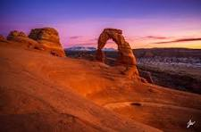
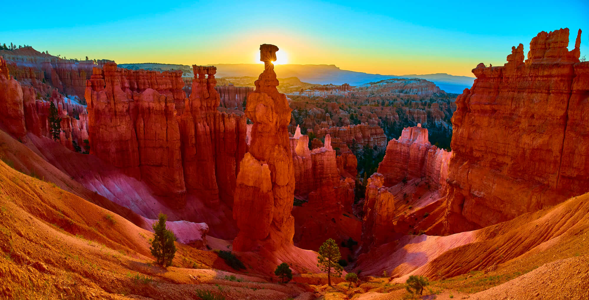

The Beauty of Utah

Zion National Park

Delicate Arch, Arches NP

Bryce Canyon
Red rocks, mountain peaks, and wide open skies
Utah is home to some of the most breathtaking landscapes in the country. Here are a few of my favorites:
Zion National Park

Delicate Arch, Arches NP

Bryce Canyon
Wear sturdy hiking boots with ankle support. Utah trails can be rocky and uneven.
Bring more water than you think you need. The dry desert air dehydrates you faster than you expect.
Start hikes before 8am to beat the heat and the crowds, especially in summer.
Cell service is spotty in most parks. Download offline maps on AllTrails before you go.
A stunning drone viewpoint of Utahs National Parks:
National park visitor trends across the US: